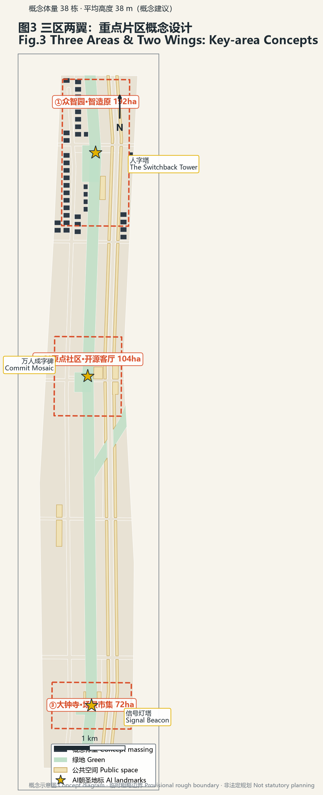

中文 · EN人字京张 · The Switchback
概念建议 Concept
临时粗略边界 Provisional
非法定规划 Non-statutory
一撇百年，一捺未来，交叉成人
任务覆盖：agent.1-6 全部展开于 proposal.md；指标由 geometry 于 EPSG:4548 复算。栏目：总览地图 · 三层范围 · 重点区域 · 用地分区 · 交通慢行 · 蓝绿公共空间 · 建筑体量 · 更新项目 · AI 场景 · 核心指标 · 自检状态 · 来源 · 假设
AI 朝圣地标 Landmarks
人字塔 Switchback Tower
自主创新的接力点，可交互数据塔
万人成字碑 Commit Mosaic
万人小'人'拼成大'人'，AR 映射贡献记录
信号灯塔 Signal Beacon
铁路信号转译的城市数据灯塔
方案图件 Figures

